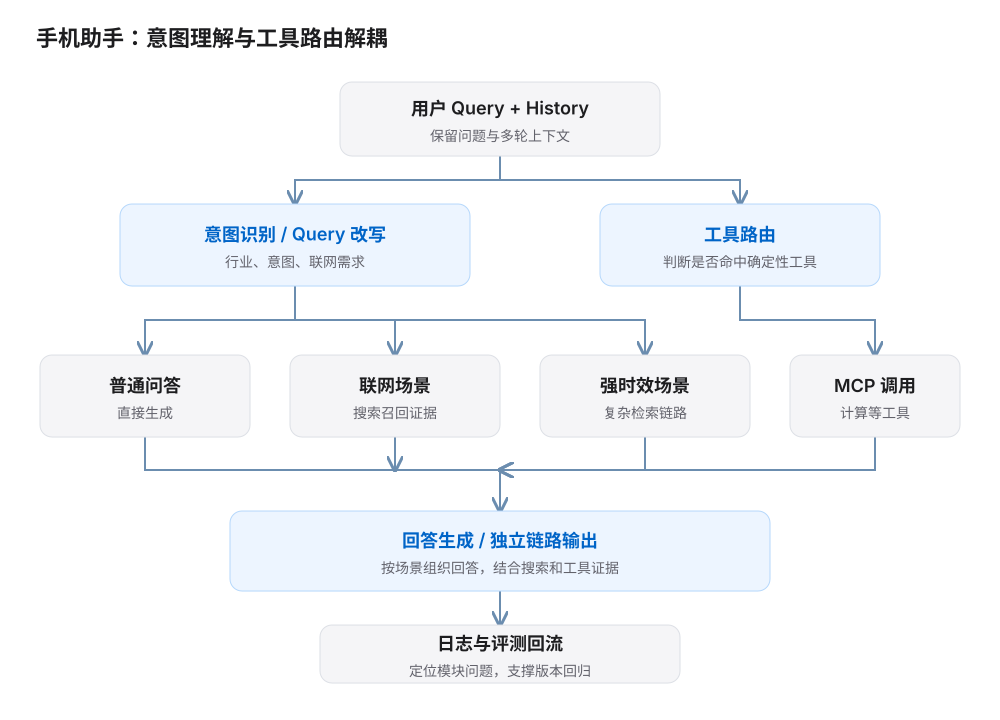
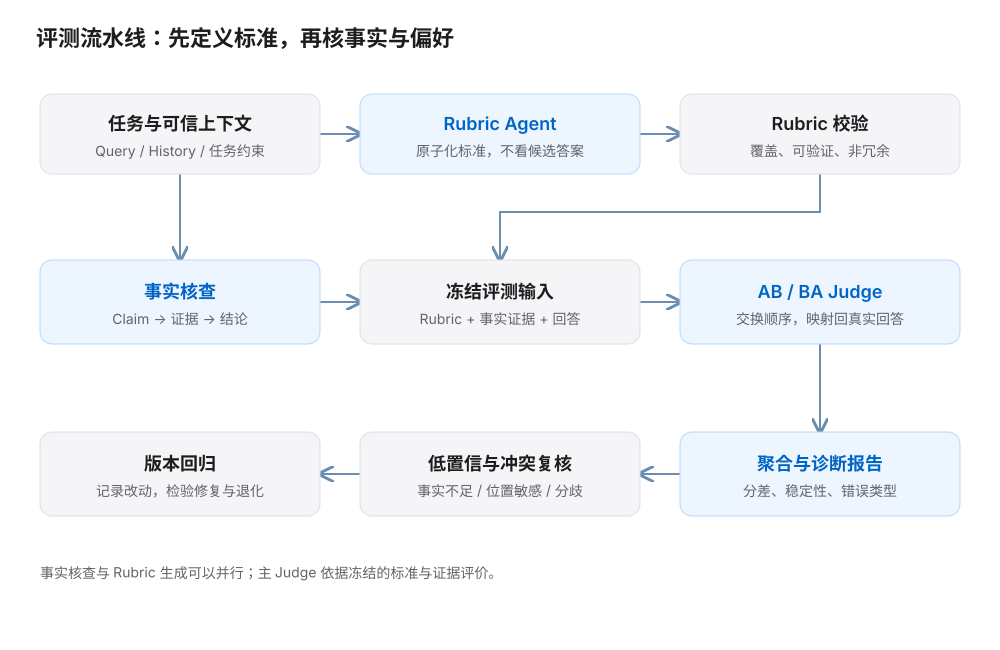

01 / 工作与成果
工作背景：手机助手既要理解开放式问题，也要正确使用搜索和工具。单看最终回答，很难判断错误来自意图识别、路由、证据还是生成。
我的工作：围绕需求定义、评测标准、Bad Case 归因与验收，把模块化 Agent 的迭代变成可以对比、追踪和回归的过程。
1 周 → 1 天
单次模型版本评测周期
60% → 85%
线上回流 Case 的机评与人评一致率
15 × 9
行业分类 × 意图分类
| 职责范围 | 具体内容 |
|---|---|
| 负责 | Rubric / Judge Prompt 优化、评测链路组装、模型选型与参数调整、结果分析、Bad Case 归因。 |
| 协同 | 与算法共同定义意图与工具路由的评测口径；基于团队提供的 LangGraph 组件搭建批量评测。 |
| 参与 | Agent 架构方案讨论、模型基座选型及跨团队交付；模型训练与底层架构由算法团队主导。 |
02 / 模块化 Agent 与垂类评测
原链路的主要问题是能力耦合：回答出错后难以定位，也不容易独立调整某个模块。我参与模块化架构升级，协同算法定义意图分流和工具路由的需求、评测与验收。
{kind=link}

三个关键取舍
| 选择 | 原因与边界 |
|---|---|
| 拆解意图、路由、搜索、生成 | 让各模块可以独立评测；最终回答的错误可以追溯到具体环节。 |
| 意图识别与工具路由并行 | 在手机助手的时延约束下，兼顾判断准确性、响应速度与成本。训练与参数调优由算法承担。 |
| 分垂类验收、逐步放量 | 以分场景效果判断准入，避免总分提升掩盖某个意图的退化。 |
在垂类工作中，我承担购物推荐意图方向的需求与评测，并参与教育等专项 Benchmark 的清洗、机评适配和结果对齐。评测集整合既有数据、线上回流与客户反馈。
03 / 自动化评测闭环
将一次模型评价拆成“标准生成—事实核查—裁判打分—结果聚合”。我基于团队的 LangGraph 底座完成模块化组装，重点推进 Rubric、Judge Prompt、事实核查增强和批量跑评。
{kind=link}

- 标准：定义“7+1 维度”机评口径，将用户约束拆成可判断的原子化 Rubric。
- 可信度：AB / BA 双向对比，定位位置偏见；事实证据与 Judge 判断分离，低置信样本进入复核。
- 诊断：对 69 条人机偏好分歧 Case 进行分析，推动多个 Judge Prompt 版本迭代。
- 工程：支撑 2000 条级批量评测，通过结构化落盘与断点续跑降低长任务中断损失。
04 / 从数据治理到模型验收
将不同批次的日志、人工评测与客户反馈整理为可用于版本比较的数据。核心不是单纯增加题量，而是保留代表性、减少重复，并让每条题目能够稳定判断。
- 数据治理统一字段、还原上下文、过滤无效样本与重复表达。
- 分层与抽样按行业、意图、工具、复杂度组织样本，覆盖高频与重要长尾。
- 质检与回归补齐标注与质检信息，用机评试跑发现歧义和低区分度题目。
中控 Agent：用 Bad Case 驱动下一轮迭代
在另一条手机中控 Agent 项目中，我负责 Bad Case 分型、评分标准、质检到精标的流程设计与效果验收；算法团队负责 SFT 训练和超参数选择。
- 质检与精标区分工具选错、参数错误、缺少二次确认等失败类型。
- 生成训练数据严格任务提供 GT；开放答案使用 Rubric 生成后再人工核验。
- 离线选优对比候选版本，检查主要错误类型是否改善。
中控 Agent 离线迭代结果
0%
100%
05 / 复盘与方法沉淀
把总分转化为可执行的问题
评测报告需要说明问题来自哪个模块、影响哪些任务、下一步由谁处理。平均分之外，还要看分意图表现、关键错误与稳定性。
评测系统也需要被评测
Judge 的规则可能误伤合理回答；更严格不一定更准确。我在提示词迭代中关注 False Tie、语言规则和事实门禁之间的影响，避免用一条规则牺牲另一类任务。
AIGC 相关探索 参与 / 学习整理
参与推荐反馈与 AIGC 创意优化方案讨论，整理业务目标、实验指标和发布检查项。奖励建模、强化学习训练与 Serving 由算法主导。